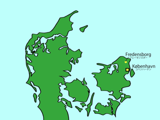

フレーゼンスボー城もまた，シェラン島北部にあるお城の1つです．フレーゼンスボー城へは，コペンハーゲン中央駅からS-tog（コペンハーゲン近郊電車）に乗ってフレズレクスボー城のあるヒレレズ（Hillerød）まで行き，そこからさらにローカル線に乗り換えてフレーゼンスボー（Fredensborg）という駅で降ります．コペンハーゲン中央駅からは，1時間程度といったところでしょうか．
フレーゼンスボー城は，現在，デンマーク王室の居城として使用されているお城の1つです．
フレーゼンスボー城は，18世紀前半，フレズレク4世の時代に，その建設が始まり，その後増設を重ね，現在の姿となっています．フレーゼンスボー城は，日本語に訳すと，「平和の城」と訳すことができます．その名が示すように，フレーゼンスボー城は当時，約20年続いた大北方戦争の終結を記念して建てられました．
お城の内部は普段は一般公開されていませんが，7月の間だけ公開されているそうです．ただ，お城に隣接する大庭園は自由に散歩することができます．お城から北に延びる広い並木道は，デンマークで3番目に大きな湖である，エスロム湖（Esrum Sø）へと続いています．